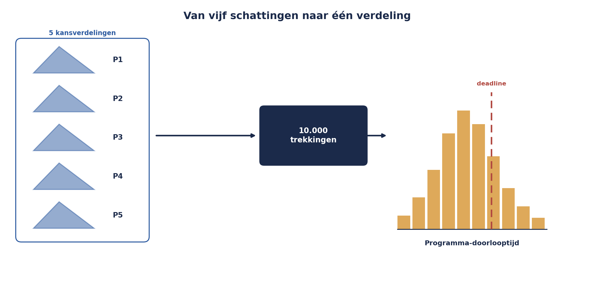

Deel 15 — Kwantitatief II: Monte Carlo-simulatie
Niveau 2 — Professional · Slidedeck (32 slides, twee dagdelen)
Slide 1 — Titel
Risicomanagement Deel 15 — Kwantitatief II: Monte Carlo-simulatie
Niveau 2: Professional — Twee dagdelen
Slide 2 — De vraag van de Sponsoring Group
“Halen we 1 januari, ja of nee — en hoe zeker ben je daarvan?”
Slide 3 — Drie dingen die een enkel antwoord verkeerd zou doen
Vijf onafhankelijke onzekerheden — terwijl P1 en P4 dezelfde leverancier delen.
Slide 4 — Drie dingen, vervolg
Sequencing P3/P5 genegeerd. Geen antwoord op “hoe zeker”.
Slide 5 — DAGDEEL 1: Concepten en eerste simulatie
Slide 6 — Het basisidee
Niet één berekening — duizenden.
Elke keer een willekeurige trekking uit een kansverdeling.
Slide 7 — Figuur 15-1

Slide 8 — Van drie punten naar een verdeling
Optimistisch, meest waarschijnlijk, pessimistisch (deel 14)
= de hoekpunten van een driehoeksverdeling.
Slide 9 — Vijf projecten, drie punten elk
P1: 8-10-16 · P2: 6-9-14 · P3: 4-6-10 P4: 5-7-11 · P5: 4-6-12 (weken)
Slide 10 — Twee complicaties
Sequencing: P3 kan pas starten als P5 klaar is. Correlatie: P1 en P4 delen een leverancier.
Slide 11 — Technische check
Python + numpy werkend? Of het Excel-alternatief klaar?
Groepjes van drie à vier vormen.
Slide 12 — Live: de code, samen doorlopen
import numpy as np
rng = np.random.default_rng(seed=42)
n_simulaties = 10_000
Slide 13 — De driehoeksverdeling trekken
def trek_driehoek(o, m, p, n):
return rng.triangular(o, m, p, n)
Slide 14 — Correlatie modelleren
leverancier_factor = rng.triangular(0, 1, 3, n_simulaties)
p1 = p1_eigen + leverancier_factor
p4 = p4_eigen + leverancier_factor
Slide 15 — Sequencing modelleren
p3_start = np.maximum(p5, geplande_start_p3)
p3 = p3_start + p3_eigen
Slide 16 — Programmadoorlooptijd
programma_doorlooptijd = np.maximum.reduce([p1, p2, p3, p4])
Het kritieke pad — de langst lopende lijn.
Slide 17 — Eerste resultaten
Kans op tijd · P10 · P50 · P90
Opdracht 15.1
Slide 18 — Einde dagdeel 1
Slide 19 — DAGDEEL 2: Interpretatie, correlatie, contingency, tornado
Slide 20 — Wat “62% kans” wél zegt
In 62 van de 100 hypothetische herhalingen: deadline gehaald.
Slide 21 — Wat het niet zegt
Niet “62% van het werk klaar”. Niet: onzekerheden buiten het model zijn meegenomen.
Slide 22 — Kernzin 9, terug
Monte Carlo voegt precisie toe aan het rekenen — niet aan de aannames zelf.
Slide 23 — P50 ≠ PERT-verwachte waarde
Mediaan versus gewogen gemiddelde.
Bij scheve verdelingen: verschillend.
Slide 24 — Opdracht 15.2 en 15.3
Correlatie herkennen. De code aanpassen.
Slide 25 — Test het zelf: met en zonder correlatie
De mediaan verandert nauwelijks.
De staart wordt merkbaar dunner zonder correlatie.
Slide 26 — Correlatie negeren is niet neutraal
Het onderschat systematisch de kans op gelijktijdige tegenslag.
Slide 27 — Contingency: welk P-niveau?
P50 is onvoldoende — per definitie 50% kans op overschrijding.
P80 of P90, gekoppeld aan risicobereidheid (deel 12).
Slide 28 — Opdracht 15.4 — advies formuleren
Slide 29 — Tornado-diagram
Welk project draagt het meest bij aan de totale onzekerheid?
Slide 30 — Figuur 15-3

Slide 31 — Live simulatie-opdracht — 45 minuten
Vijf stappen: basissimulatie, correlatie verwijderen, schatting wijzigen, tornado bouwen, advies formuleren.
Slide 32 — Voor deel 16
Deel 16: bow-tie-analyse — oorzaken, het risico, gevolgen, en of je beheersmaatregelen ook echt werken.